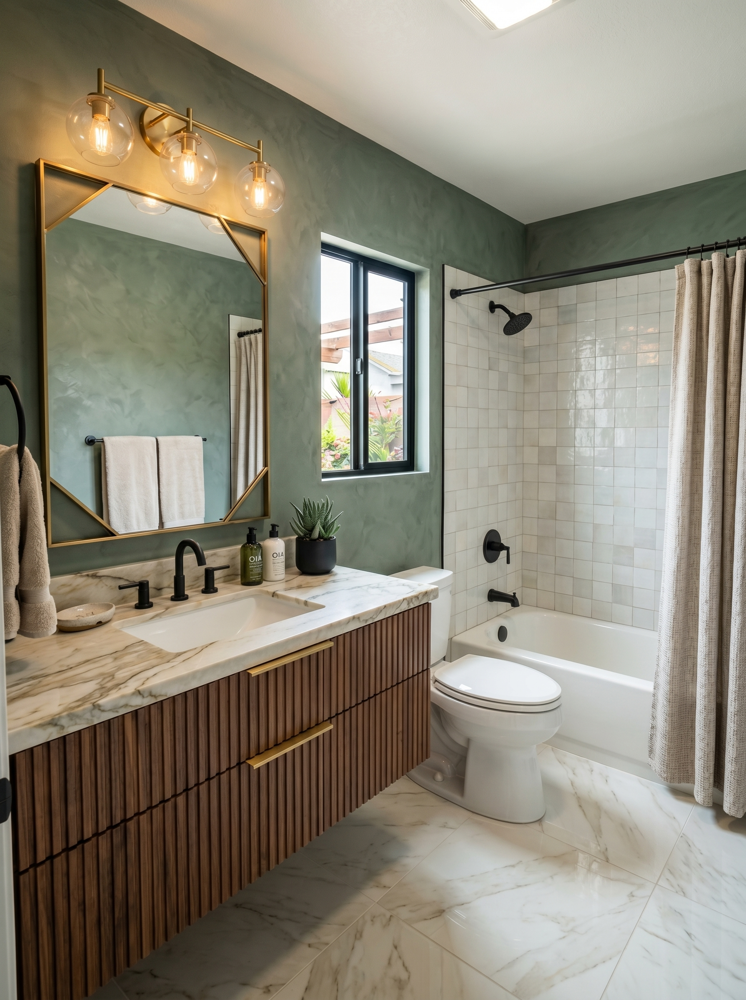

Find the exact repair path.
Search services, DFW city pages, guides, case studies, commercial maintenance, property manager resources, and the Workpedia library from one clean command center.
162 results
 ResourceELF Home Services | DFW Home Repair & Remodel
ResourceELF Home Services | DFW Home Repair & RemodelDenton-based home repair and remodel service for painting, drywall, tile, flooring, kitchen and bath remodels, repairs, and appliance service across North DFW.
 ResourceAbout ELF Home Services | DFW Home Repair Standards
ResourceAbout ELF Home Services | DFW Home Repair StandardsELF Home Services is a Denton-based home repair and remodel service. Clear estimates, documented work, and warranty-backed standards guide every job.
ResourceBook Online · Schedule a Visit | ELF Home Services DFWBook your handyman visit online in 60 seconds. Pick a service, choose a day & time, and we confirm by text within an hour.
Case StudyDFW Home Repair Case Studies | ELF Home ServicesDetailed ELF Home Services case studies for kitchens, bathrooms, flooring, painting, drywall, commercial maintenance.
 Case StudyArlington LVP Flooring Case Study | ELF Home Services
Case StudyArlington LVP Flooring Case Study | ELF Home ServicesAn Arlington LVP flooring case study covering demo, slab prep, transitions, underlayment, plank direction, baseboards, and practical cost drivers.
 Case StudyDallas Office Drywall Repair Case Study | ELF
Case StudyDallas Office Drywall Repair Case Study | ELFA Dallas commercial office repair case study covering after-hours access, drywall patching, paint match, dust control, safety notes.
 Case StudyDenton Handyman Punch List Case Study | ELF Home Services
Case StudyDenton Handyman Punch List Case Study | ELF Home ServicesA Denton handyman punch list case study showing how small repairs become faster and cleaner when grouped, photographed, and prioritized.
 Case StudyDenton Interior Painting Case Study | ELF Home Services
Case StudyDenton Interior Painting Case Study | ELF Home ServicesA Denton interior painting case study focused on prep, trim, sheen choice, drywall touch-ups, clean lines, and occupied-home scheduling.
 Case StudyDFW Property Make-Ready Case Study | ELF Home Services
Case StudyDFW Property Make-Ready Case Study | ELF Home ServicesA DFW property make-ready case study for property managers, investors, and agents who need documented repairs before listing or tenant move-in.
 Case StudyFrisco Cabinet Painting Case Study | ELF Home Services
Case StudyFrisco Cabinet Painting Case Study | ELF Home ServicesA Frisco cabinet painting case study covering cleaning, sanding, bonding primer, spray finish, cure time, hardware changes, and kitchen protection.
 Case StudyFrisco Kitchen Remodel Case Study | ELF Home Services
Case StudyFrisco Kitchen Remodel Case Study | ELF Home ServicesA practical Frisco kitchen remodel case study covering layout decisions, quartz counters, backsplash detail, cabinet planning, lighting.

Case StudyMcKinney Bathroom Retile Case Study | ELF Home ServicesA McKinney bathroom retile case study explaining waterproofing decisions, tile layout, grout choice, shower hardware, ventilation.
 Case StudyNorth Texas Exterior Paint Case Study | ELF Home Services
Case StudyNorth Texas Exterior Paint Case Study | ELF Home ServicesA North Texas exterior paint case study covering prep, trim repair, caulk failure, sun exposure, HOA color approval, primer, and weather scheduling.
 Case StudyPlano Drywall Texture Repair Case Study | ELF Home Services
Case StudyPlano Drywall Texture Repair Case Study | ELF Home ServicesA Plano drywall repair case study explaining texture matching, crack repair, primer, paint blending, water stain caution, and finish expectations.
 ResourceDIY Home Repair Guides | ELF Home Services DFW
ResourceDIY Home Repair Guides | ELF Home Services DFWStep-by-step DIY guides for DFW homeowners. 10 beginner and intermediate projects you can handle yourself, with tools, times.
 CommercialELF Commercial DFW | Facility Maintenance & Repairs
CommercialELF Commercial DFW | Facility Maintenance & RepairsDFW commercial repair command center for facility maintenance, tenant improvements, retail, restaurant, office, ADA, flooring, drywall.
CommercialCommercial Services Library in DFW | ELF CommercialExplore ELF Commercial services for DFW businesses: facility maintenance, tenant improvements, retail, restaurants, offices, ADA, flooring.
 CommercialADA Compliance Upgrades DFW | ELF Commercial
CommercialADA Compliance Upgrades DFW | ELF CommercialCommercial ADA upgrade planning across DFW for access paths, restrooms, reach ranges, grab bars, thresholds, door hardware, signage.
CommercialCommercial Drywall & Painting in DFW | ELF CommercialCommercial drywall repair, paint touch-ups, wall refreshes, patch-to-paint closeout, trim, corner damage, and after-hours finish work across DFW.
 CommercialCommercial Flooring Repair DFW | ELF Commercial
CommercialCommercial Flooring Repair DFW | ELF CommercialCommercial flooring repair planning across DFW for tile, LVP, carpet tile, transitions, grout, baseboard, trip hazards.
Commercial24/7 Emergency Commercial Repairs in DFW | ELF CommercialEmergency commercial repair response across DFW for water intrusion, storm damage, broken glass, security issues, doors, hazards.
CommercialFacility Maintenance DFW | ELF CommercialScheduled commercial facility maintenance across DFW with route visits, on-call repairs, photo documentation, vendor setup support.
CommercialMulti-Location Maintenance DFW | ELF CommercialMulti-location commercial maintenance programs for DFW and North Texas operators with route visits, SLA triage, consolidated notes, photo closeouts.
CommercialOffice Repairs DFW | ELF CommercialOffice repair and maintenance across DFW: walls, paint, doors, hardware, flooring, furniture assembly, mounting, conference rooms.
CommercialProperty Manager Handyman DFW | ELF CommercialCommercial handyman support for DFW property managers with vendor setup support, Additional Texas LLC wording, owner-ready reporting, account billing options.
CommercialRestaurant Repairs DFW | ELF CommercialRestaurant repair, refresh, and punch work across DFW: front-of-house, back-of-house, restrooms, tile, doors, drywall, paint, and after-hours service.
CommercialRetail Store Repairs & Maintenance in DFW | ELF CommercialAfter-hours retail repairs, fixture work, storefront details, wall repairs, paint touch-ups, doors, restrooms, and punch lists for DFW stores.
CommercialTenant Improvements & Finish-Outs DFW | ELF CommercialCommercial tenant improvements, finish-outs, punch lists, repairs, paint, doors, fixtures, and turnover work for offices, retail.
 Property ProsELF Property Pros | DFW Make-Ready Repairs
Property ProsELF Property Pros | DFW Make-Ready RepairsPriority repair, make-ready turnover, pre-listing, and property manager maintenance services across DFW with photo-documented invoicing and account.
Property ProsMake-Ready Turnover Services in DFW | Rent-Ready RepairsMake-ready turnover services across DFW: drywall, paint, caulk, doors, fixtures, flooring touch-ups, tile repair, punch lists, and vacancy scheduling.
 Property ProsPre-Listing Repair Services in DFW | Agent Punch Lists
Property ProsPre-Listing Repair Services in DFW | Agent Punch ListsPre-listing repair services for DFW agents and sellers: drywall, paint, caulk, doors, lighting, curb appeal, inspection punch lists, photo-day prep.
Property ProsProperty Manager Services DFW | ELF Property ProsPriority maintenance for DFW property managers: tenant work orders, owner-ready documentation, multi-property scheduling, make-ready support.
Property ProsProperty Pros Program | Landlord Repairs DFWPriority repair account program for DFW property managers, landlords, investors, and agents with make-ready turns, tenant work orders.
 ResourceEmergency Handyman DFW | Same-Day Urgent Repairs | ELF
ResourceEmergency Handyman DFW | Same-Day Urgent Repairs | ELFSame-day emergency handyman service across Dallas-Fort Worth. Water damage, lockouts, storm damage, broken doors. 2-hour response in core area.
ResourceFAQ | Common Questions | ELF Home Services DFWFrequently asked questions about ELF Home Services. Pricing, warranty, service area, project process, and more.
ResourceProject Gallery | Real DFW Homes | ELF Home ServicesProject documentation will feature verified ELF work as it is completed across North DFW. Kitchens, bathrooms, flooring, painting, and more.
 GuideDFW Home Repair & Remodel Guides | ELF
GuideDFW Home Repair & Remodel Guides | ELFThe public ELF Home Services guide library with 70 DFW home repair, remodel, DIY, maintenance, material, and replacement timing guides.
GuideAnnual Home Maintenance North Texas | Seasonal ChecklistA seasonal North Texas home maintenance checklist for clay soil, storms, heat, HVAC strain, exterior paint, gutters, caulk, decks, fences.
GuideMonthly Appliance Maintenance Checklist | DFW Home CareA practical monthly appliance maintenance checklist for refrigerators, dishwashers, disposals, washers, dryers, ranges, vents, filters, leaks.
 GuideBacksplash Trends for Open Kitchens in Texas | 2026 Guide
GuideBacksplash Trends for Open Kitchens in Texas | 2026 GuideBacksplash trend guide for open Texas kitchens: slab backsplashes, handmade tile, zellige looks, neutral texture, grout choices, range walls.
GuideBathroom Designs Buyers Want in Southlake | 2026 GuideSouthlake bathroom design guide for buyers: luxury showers, vanities, stone looks, lighting, storage, neutral palettes, wet rooms.
GuideBathroom Flooring Trends McKinney 2026 | ELFMcKinney bathroom flooring trend guide for 2026: porcelain tile, stone looks, slip resistance, heated floors, grout, LVP limits.
GuideBathroom Remodel Cost North Texas 2026 | ELF Home ServicesA complete 2026 North Texas bathroom remodel cost guide with shower, vanity, tile, waterproofing, plumbing, timeline.
GuideBest Deck Materials for Texas Summer | ELFTexas deck material guide for summer heat: pressure-treated wood, cedar, composite, PVC, coatings, shade, maintenance, heat retention.
 GuideBest Kitchen Tile in Plano & Frisco | ELF Guide
GuideBest Kitchen Tile in Plano & Frisco | ELF GuidePlano and Frisco kitchen tile guide for backsplashes, porcelain floors, grout, open kitchen sight lines, resale-friendly style.
GuideCabinet Colors With Best Resale Value in DFW | 2026 GuideDFW cabinet color guide for resale: warm white, greige, taupe, soft green, navy, two-tone kitchens, wood stain, lighting.
GuideCabinet Painting Cost vs Replacement DFW | ELFA complete 2026 DFW cabinet painting vs replacement guide comparing cost, durability, ROI, door style, box condition, timelines.
GuideDFW Pre-Sale Home Repair Checklist | ELFA practical DFW pre-sale repair checklist for paint, drywall, grout, doors, lighting, curb appeal, inspection risk, photos.
GuideTexas Deck Maintenance Schedule | ELF GuideTexas deck maintenance schedule for cleaning, inspection, staining, board repair, fasteners, railings, mildew, UV exposure, storm checks.
GuideDeck Refinishing Cost Texas 2026 | ELF Home Services2026 Texas deck refinishing cost guide for cleaning, sanding, stripping, staining, board repair, railings, heat exposure, and maintenance timing.
GuideDeck Refinishing DIY vs Professional | Texas Homeowner GuideDeck refinishing DIY vs professional guide for Texas homeowners: cleaning, sanding, stripping, stain choice, weather timing, board repair, railings.
GuideDrywall Repair Cost DFW 2026 | ELF Home ServicesA complete 2026 DFW drywall repair cost guide for holes, cracks, water damage, texture matching, skim coating, ceilings.
GuideDrywall Repair DIY vs Pro | Patch & TextureDrywall repair DIY vs professional guide for holes, cracks, ceiling stains, texture matching, paint blending, tools, risk.
GuideHow to Extend the Life of a Kitchen Remodel | Care GuideKitchen remodel care guide for cabinets, counters, backsplash, grout, caulk, appliances, paint, hardware, ventilation, cleaning habits.
GuideExterior Paint Maintenance Texas | Heat, Caulk & Trim CareTexas exterior paint maintenance guide for heat, UV, caulk cracks, peeling trim, chalking, siding, doors, touch-ups, cleaning, and repaint timing.
GuideFence Repair Yourself: What Works | Texas GuideFence repair DIY guide for Texas homeowners: loose pickets, leaning posts, gate sag, root damage, storm damage, tools, safety, and when to call a pro.
GuideFoundation Cracks & Drywall Repair Texas | ELFTexas foundation crack and drywall repair guide: clay soil movement, cosmetic vs structural warning signs, texture repair, recurring cracks.
GuideHandyman Hourly Rate DFW 2026 | ELF Home Services2026 DFW handyman hourly rate and flat-rate guide with common repair prices, minimum visits, bundling advice, scheduling notes, and scope boundaries.
 GuideHard Water Tile Stains Texas | Grout & Glass
GuideHard Water Tile Stains Texas | Grout & GlassTexas hard water tile stain guide for showers, grout, glass, natural stone, mineral deposits, safe cleaners, sealers, ventilation.
 GuideHardwood Floor Maintenance in Texas Humidity | Care Guide
GuideHardwood Floor Maintenance in Texas Humidity | Care GuideTexas hardwood floor maintenance guide for humidity swings, cleaning, gaps, cupping, scratches, engineered wood, rugs, sunlight, moisture.
GuideHOA-Approved Home Improvements in DFW | ELF GuideDFW HOA home improvement guide for exterior paint, fences, doors, lighting, visible repairs, approval packets, contractor notes.
GuideHome Renovation Cost Guide DFW 2026 | ELF Home Services2026 DFW home renovation cost guide covering kitchens, bathrooms, flooring, painting, drywall, trim, decks, punch lists, phasing, contingency.
GuideHome Upgrades With Best ROI When Selling in DFW | 2026 GuideDFW home upgrade ROI guide for selling: paint, drywall, flooring, cabinets, bathrooms, kitchens, curb appeal, lighting, repairs.
GuideHow to Tell If Grout Needs Replacing | DFW Tile GuideLearn when grout can be cleaned, sealed, repaired, or fully replaced in bathrooms, showers, kitchens, and floors in North Texas homes.
 GuideHumidity Bathroom Tile Problems DFW | ELF
GuideHumidity Bathroom Tile Problems DFW | ELFDFW bathroom humidity and tile problem guide for grout failure, caulk cracks, mildew, loose tile, ventilation, shower waterproofing.
GuideInstall LVP Yourself: Common Mistakes | Texas Flooring GuideDIY LVP installation guide for common mistakes: slab prep, moisture, expansion gaps, transitions, door jambs, plank direction, underlayment.
GuideInterior Painting Cost Per Room DFW 2026 | ELF Home ServicesA detailed 2026 DFW interior painting cost guide by room with wall prep, trim, doors, ceilings, texture, paint quality.
GuideKitchen Remodel Cost DFW 2026 | ELF Home Services2026 DFW kitchen remodel cost guide with real price ranges, scope tiers, timelines, cabinet decisions, permit notes, and local budgeting advice.
GuideKitchen Trends DFW 2026 | Practical IdeasDFW kitchen trends for 2026: warm cabinets, quartz, slab backsplashes, storage, lighting, islands, appliance planning, resale-safe colors.
GuideLVP Flooring Cost Per Sqft Texas 2026 | ELF Home ServicesA complete Texas LVP flooring cost guide for 2026 with material, labor, demo, slab prep, underlayment, stairs, transitions.
GuideLVP vs Hardwood in DFW 2026 | Which Floor Fits Texas Homes?LVP vs hardwood guide for DFW homes in 2026: cost, durability, resale, pets, slab moisture, humidity, repairs, sunlight, sound, and design tradeoffs.
GuideHow to Maintain Grout Without Replacing It | Tile Care GuideGrout maintenance guide for cleaning, sealing, stains, mildew, cracked caulk, hard water, shower humidity, kitchen backsplashes.
GuideNew Construction Punch List DFW | ELFDFW new construction punch list guide for builder warranty items, blue tape, drywall cracks, doors, caulk, tile, cabinets, fixtures.
GuidePaint Kitchen Cabinets Without a Sprayer | Honest DIY GuideGuide to painting kitchen cabinets without a sprayer: prep, cleaning, sanding, primer, brush and roller technique, cure time, durability.
GuidePainting Yourself vs Hiring a Contractor | DFWDIY painting vs contractor guide for DFW homeowners: prep, walls, trim, ceilings, tall rooms, paint quality, time, tools, finish standards.
GuidePopcorn Ceiling Asbestos North Texas | ELFNorth Texas popcorn ceiling asbestos guide from ELF Home Services: when to test, what warning signs matter, what not to disturb.
GuidePopular Paint Colors North Texas 2026 | ELFNorth Texas paint color guide for 2026: warm whites, greige, taupe, muted greens, exterior colors, trim, cabinets, lighting, resale.
GuidePrepare Your DFW Home for Summer | ELF GuideTexas summer home prep checklist for HVAC strain, exterior paint, caulk, gutters, drainage, decks, fences, windows, doors, appliances.
GuidePrepare Your Home for DFW Winter | ChecklistDFW winter home prep guide for freezes, hose bibs, weatherstripping, doors, attic access, exterior caulk, plumbing, gutters, insulation clues.
GuidePrevent Bathroom Water Damage | ELF GuideBathroom water damage prevention guide for showers, caulk, grout, toilets, vanities, fans, supply lines, flooring, stains, leaks.
GuideSand Hardwood Floors Yourself? The Truth for Texas HomesHonest guide to sanding hardwood floors yourself: rental sanders, dust, uneven sanding, finish mistakes, engineered wood limits, stains.
GuideSigns a Deck Needs Replacement vs Repair | Texas Deck GuideA Texas deck decision guide for rot, soft boards, railing movement, joist issues, fasteners, stain failure, sun damage.
GuideSigns Drywall Has Water Damage | DFW Repair GuideHow to spot drywall water damage in DFW homes, including stains, bubbles, soft texture, odors, baseboard swelling, ceiling marks.
GuideSigns Wood Floor Needs Refinishing | Texas Hardwood GuideA Texas hardwood floor guide to scratches, dull finish, gray wear, water stains, cupping, gaps, sun fading.
GuideSlab Foundation Home Repairs in DFW | ELF GuideDFW slab foundation home repair guide for drywall cracks, stuck doors, flooring gaps, trim, cabinets, plumbing clues, cosmetic repair timing.
GuideNorth Texas Storm Damage Repairs | ELF GuideNorth Texas storm damage repair guide for fences, exterior trim, water stains, drywall, doors, caulk, temporary protection, documentation.
GuideFix Paint Peeling From Texas Heat | ELF GuideTexas summer heat paint peeling guide for exterior trim, siding, doors, caulk failure, sun-facing walls, primer, scraping, sanding, repaint timing.
GuideDIY Tile Backsplash Guide | Honest Planning for HomeownersDIY tile backsplash guide for layout, outlets, cuts, grout, adhesive, edge trim, wall prep, range walls, common mistakes.
GuideTile Installation Cost DFW 2026 | ELF Home ServicesA detailed 2026 DFW tile installation cost guide for backsplashes, floors, showers, large-format tile, grout, waterproofing.
GuideTipos de Pintura para Interiores Texas | ELFGuia en espanol sobre tipos de pintura interior en Texas: acabado mate, eggshell, satin, semi-gloss, pintura para banos, cocinas, trim.
GuideTree Root Fence Damage Dallas | ELF GuideDallas tree root fence damage guide: leaning posts, pushed gates, uneven panels, soil movement, root-safe planning, repair options.
GuideTypes of Backsplash Tile | Subway & SlabA backsplash style guide for subway tile, herringbone, mosaic, zellige looks, slab backsplash, grout choices, outlets, range walls.
GuideTypes of Bathroom Vanity | Floating & Built-InA bathroom vanity guide for floating, freestanding, built-in, double, furniture-style, storage, plumbing, counters, sinks, lighting.
GuideTypes of Deck Stain | Solid vs Semi-Transparent in TexasCompare solid, semi-transparent, transparent, oil-based, water-based, and hybrid deck stains for Texas heat, UV, prep, maintenance, and refinishing.
GuideTypes of Drywall | Moisture & Fire RatedA drywall type guide for standard drywall, moisture-resistant panels, fire-rated drywall, sound-reducing board, cement board, texture.
GuideTypes of Grout | Sanded, Unsanded and Epoxy Tile GroutCompare sanded, unsanded, epoxy, premixed, and high-performance grout for showers, backsplashes, floors, grout width, cleaning, and DFW tile projects.
GuideTypes of Interior Paint Finishes | ELF GuideA DFW interior paint finish guide comparing flat, matte, eggshell, satin, semi-gloss, gloss, cabinet enamel, trim paint, bath paint, cleaning.
GuideTypes of Kitchen Cabinet Materials | ELFA kitchen cabinet material guide for solid wood, plywood, MDF, particleboard, thermofoil, laminate, painted cabinets, refinishing, durability.
GuideTypes of LVP Flooring and Wear Layer Guide | DFW HomesA DFW luxury vinyl plank guide explaining wear layer, SPC, WPC, click-lock, glue-down, underlayment, thickness, texture, waterproof claims.
GuideTypes of Tile | Porcelain, Ceramic, Stone and Large FormatA DFW tile material guide comparing porcelain, ceramic, natural stone, large-format tile, mosaics, slip resistance, grout, waterproofing.
GuideWaterproof Shower DIY vs Contractor | ELFWaterproof shower DIY vs contractor guide for membranes, pans, slope, niches, curbs, tile, grout, flood testing, common failures, and when to hire.
GuideWhen DIY Costs More Than Hiring a Pro | ELFDFW homeowner guide to when DIY costs more than hiring a pro: tools, rework, materials, safety, water damage, finish standards, timelines.
GuideWhen Does a Kitchen Remodel Make Sense? | DFW Decision GuideA DFW kitchen decision guide for remodel timing, cabinet function, layout problems, resale plans, appliance changes, water damage, budget.
GuideHandyman vs Contractor | DFW Repair GuideA practical DFW guide to deciding between handyman service, contractor, specialist, licensed trade, remodeler.
GuideWhen to Repaint an Exterior House Texas | ELFA Texas exterior repaint guide for fading, peeling, caulk failure, trim rot, sun exposure, HOA colors, weather windows, prep, primer.
GuideWhen to Replace Bathroom Tile | Shower and Floor GuideA bathroom tile replacement guide for cracked tile, loose tile, failed grout, shower leaks, waterproofing, dated tile, resale.
GuideWhen to Replace vs Repair Flooring | DFW Home Flooring GuideA DFW flooring decision guide for replacing vs repairing LVP, hardwood, tile, laminate, carpet, water damage, pet damage, slab issues, transitions.
 ResourceHVAC Guide DFW | Heating & Cooling | ELF
ResourceHVAC Guide DFW | Heating & Cooling | ELFComprehensive HVAC guide for Dallas-Fort Worth homeowners. System types, components, refrigerants, maintenance, warning signs, and repair vs.
LocationAllen Handyman & Remodel Services | ELF Home ServicesHandyman service in Allen, TX: Twin Creeks, Watters Creek, Cottonwood Creek, and Star Creek. Quality repairs, maintenance, updates.
LocationBathroom Remodel Allen TX | Shower, Tile & Vanity UpgradesAllen TX bathroom remodel guide from ELF Home Services: shower conversions, tile, vanities, waterproofing, storage, realistic planning ranges.
LocationBathroom Remodel Frisco TX | Shower, Vanity & Tile UpgradesFrisco TX bathroom remodel guide for primary suites, shower conversions, tile, vanities, waterproofing, builder-grade bath updates.
LocationBathroom Remodel Lewisville TX | Moisture-Smart Bath UpdatesLewisville TX bathroom remodel guide with practical notes for older homes, lakeside humidity, ventilation, tile showers, tub-to-shower conversions.
LocationBathroom Remodel McKinney TX | ELF Home ServicesBathroom remodels in McKinney, TX: walk-in showers, vanity upgrades, tile, waterproofing, and primary bath renovations. registered Texas LLC.
LocationBathroom Remodel Southlake TX | Showers & VanitiesSouthlake TX bathroom remodel guide for luxury primary baths, custom showers, stone, large-format tile, vanities, lighting, waterproofing.
LocationCabinet Refinishing Frisco TX | ELF Home ServicesProfessional cabinet refinishing and painting in Frisco, TX. Spray-quality finish, factory look. Better than painting over — we sand, prime.
LocationCabinet Refinishing Plano TX | Color & ResalePlano TX cabinet refinishing guide for oak cabinets, 1980s and 1990s kitchens, cabinet painting, color choice, prep, durability.
LocationDenton Handyman & Remodel Services | ELF Home ServicesDenton-based handyman serving historic downtown, UNT-area homes, The Trails, and North DFW with same-day quotes, clean repairs.
LocationDrywall Repair Frisco TX | Nail Pops, Cracks & Texture MatchFrisco TX drywall repair guide for nail pops, settlement cracks, builder texture, ceiling stains, access patches, paint blending.
LocationDrywall Repair Lewisville TX | ELF Home ServicesExpert drywall repair in Lewisville, TX: holes, water damage, texture matching, full panels, ceiling patches, and same-day estimates.
LocationDrywall Repair McKinney TX | Texture, Cracks & Water DamageMcKinney TX drywall repair guide for settlement cracks, nail pops, ceiling stains, texture matching, patching.
LocationEmergency Handyman Denton TX | Same-Day ELF Home ServicesSame-day emergency handyman in Denton, TX. Burst pipe damage, fallen fence, door lock failure, storm damage. Available 7AM-10PM daily.
LocationFlooring Installation in Denton, TX | ELF Home ServicesDenton TX flooring installation guide for LVP, laminate, hardwood, rentals, older homes, subfloor prep, slab moisture, transitions.
LocationFlooring Installation McKinney TX | LVP & HardwoodMcKinney TX flooring installation guide for LVP, hardwood, older homes, new-build slabs, subfloor prep, transitions, stairs, pets.
LocationFlower Mound Handyman & Remodel Services | ELFHandyman service in Flower Mound, TX. Wellington Estates to Bridlewood, The Trails to Lakeside DFW. Premium remodels, exterior painting.
LocationFrisco Handyman & Remodel Services | ELF Home ServicesHandyman service in Frisco, TX: kitchen remodels, painting, tile, flooring, drywall, and repairs across Stonebriar, Phillips Creek Ranch.
LocationHandyman Allen TX | Punch Lists, Repairs & InstallationsAllen TX handyman services guide for punch lists, door adjustments, fixtures, drywall, caulk, shelves, garage upgrades, pre-sale repairs.
LocationHandyman Denton TX | Rentals, Older Homes & Punch ListsDenton TX handyman services guide for rentals, older homes, door repairs, drywall patches, fixture installs, caulk, student housing turnover.
LocationHandyman Flower Mound TX | ELF Home ServicesHandyman help in Flower Mound, TX for repairs, installations, punch lists, and pre-listing work across Bridlewood, Lakewood Village.
LocationHandyman McKinney TX | Repairs, Installations & Sale PrepMcKinney TX handyman services guide for new-build punch lists, historic-home repairs, pre-sale fixes, fixture installs, drywall patches, doors.
LocationHardwood Flooring in Plano, TX | ELF Home ServicesPlano TX hardwood flooring guide for engineered hardwood, slab moisture, refinishing decisions, transitions, repairs.
LocationKitchen Remodel Allen TX | Cabinets & QuartzAllen TX kitchen remodel guide for cabinet painting, quartz counters, islands, lighting, storage, backsplash, family-friendly layouts.
LocationKitchen Remodel Frisco TX | ELF Home ServicesKitchen remodels in Frisco, TX: semi-custom cabinets, quartz counters, backsplashes, open-concept updates, and real planning for local homes.
LocationKitchen Remodel Plano TX | Cabinets & CountersPlano TX kitchen remodel guide for 1980s and 1990s kitchens, cabinet refinishing, counters, islands, lighting, layout changes, permits.
LocationKitchen Remodel Southlake TX | Cabinets & StoneSouthlake TX kitchen remodel guide for luxury cabinets, islands, stone counters, appliance planning, lighting, backsplash layout, custom storage.
LocationLewisville Handyman & Remodel Services | ELFHandyman service in Lewisville, TX from Old Town to Castle Hills, Vista Ridge, and The Tribute with repairs, remodels, updates.
LocationLVP Flooring Installation Frisco TX | ELF Home ServicesLVP and hardwood flooring installation in Frisco, TX: wide-plank vinyl, engineered hardwood, slab prep, transitions, and free local estimates.
LocationHandyman in McKinney, TX | Historic Homes & Modern RemodelsHandyman service in McKinney, TX: historic downtown, Stonebridge Ranch, Adriatica, older-home repairs, premium remodels, and same-day quotes.
LocationPainting Contractor Denton TX | ELF Home ServicesInterior and exterior painting in Denton, TX. Painting service in UNT area, Robson Ranch, Oak-Hickory Historic District. Flat pricing.
LocationPainting Contractor in Frisco, TX | ELF Home ServicesFrisco TX painting contractor guide for builder flat paint, high ceilings, exterior sun exposure, HOA color planning, cabinet painting, touch-ups.
LocationPainting Contractor Plano TX | Interior & ExteriorPlano TX painting contractor guide for older interiors, trim, exterior sun exposure, cabinet painting, drywall prep, color planning.
LocationPlano Handyman & Remodel Services | ELF Home ServicesHandyman service in Plano, TX. Drywall, painting, kitchen and bathroom remodels, popcorn removal.
LocationPopcorn Ceiling Removal Dallas TX | ELF Home ServicesPopcorn ceiling removal in Dallas and North DFW with asbestos-aware planning, smooth or knockdown finishes, dust control, and same-day estimates.
LocationHandyman in Southlake, TX | Premium Remodels & Custom WorkHandyman service in Southlake, TX. Carillon, Timarron, Stone Lakes, Estates of Southlake. Premium custom work for one of DFW's most discerning.
LocationTile Installation Frisco TX | Showers, Floors & BacksplashesFrisco TX tile installation guide for shower tile, kitchen backsplashes, floor tile, large-format tile, grout, waterproofing, builder upgrades.
LocationTile Installation McKinney TX | ELF Home ServicesProfessional tile installation in McKinney, TX: kitchen backsplashes, bathroom tile, floor tile, shower walls, flat pricing, and free estimates.
LocationTile Installation in Southlake, TX | ELF Home ServicesSouthlake TX tile installation guide for luxury showers, large-format tile, natural stone, backsplashes, waterproofing, layout planning.
ResourceHome Maintenance Schedule | DFW Seasonal ChecklistComplete seasonal home maintenance schedule for Dallas-Fort Worth homeowners. Spring, summer, fall, winter checklists. Monthly tasks. Annual services.
ResourcePricing | Transparent DFW Handyman Rates | ELF Home ServicesTransparent flat-rate pricing for handyman services across Dallas-Fort Worth. Painting, drywall, tile, flooring, kitchen, bathroom, repairs.
ResourceGet a Free Estimate | ELF Home Services DFWRequest a free flat-rate estimate for any home service across Dallas-Fort Worth. Call, text, WhatsApp, or use the form. We respond within 2 hours.
ResourceReviews | ELF Home Services Denton TXLearn how ELF Home Services approaches estimates, communication, cleanup, and warranty-backed work across North DFW.
ResourceSearch ELF | Services, Guides & CitiesSearch the ELF website: DFW services, city pages, guides, case studies, commercial maintenance, property pros, and Workpedia resources.
ResourceService Areas | All North DFW | ELF Home ServicesELF Home Services serves all of North Dallas-Fort Worth: Denton, Frisco, Plano, McKinney, Allen, Lewisville, Flower Mound, Southlake, Carrollton.
ResourceAll Services | ELF Home Services DFWFull ELF Home Services menu across DFW: painting, drywall, tile, flooring, kitchen and bath remodels, repairs, appliances, flat pricing.
 ServiceAppliance Repair DFW | Washer, Dryer, Fridge, Dishwasher
ServiceAppliance Repair DFW | Washer, Dryer, Fridge, DishwasherHonest appliance repair across Dallas-Fort Worth. Washers, dryers, refrigerators, dishwashers, ranges. We tell you when to replace vs. repair.
ServiceBathroom Remodel DFW | Showers, Vanities, Full RenovationsExpert bathroom remodels across Dallas-Fort Worth. Custom showers with KERDI waterproofing, premium vanities, ADA aging-in-place options.
ServiceDrywall Repair & Installation DFW | ELF Home ServicesExpert drywall repair, installation, and texture matching across Dallas-Fort Worth. Seasonal crack repair, popcorn removal, Level 4 & 5 finishes.
ServiceFlooring Installation DFW | LVP, Hardwood, Tile, CarpetExpert flooring installation across Dallas-Fort Worth. LVP, engineered hardwood, porcelain tile, carpet. Slab moisture testing.
ServiceKitchen Remodel DFW | Cabinets, Counters, Full RenovationKitchen remodels across Dallas-Fort Worth: cabinet refreshes, custom builds, quartz counters, semi-custom cabinets, premium installation.
ServiceInterior & Exterior Painting DFW | ELF Home ServicesProfessional painting services across Dallas-Fort Worth. Interior, exterior, cabinets. Premium paints (Sherwin-Williams, Benjamin Moore).
ServiceGeneral Home Repairs DFW | Doors, Windows, Trim, FixturesGeneral handyman repairs across Dallas-Fort Worth. Doors, windows, trim, caulking, fixtures, fences, decks. $95 minimum visit. Same-day estimates.
ServiceTile Installation DFW | Backsplash, Shower & FloorTile installation across Dallas-Fort Worth: kitchen backsplashes, shower retiling, bathroom floors, Schluter KERDI waterproofing.
WorkpediaWorkpedia | DFW Home Repair Encyclopedia | ELF Home ServicesExplore the ELF Workpedia: a DFW home repair encyclopedia for painting, drywall, tile, flooring, kitchens, bathrooms, maintenance.